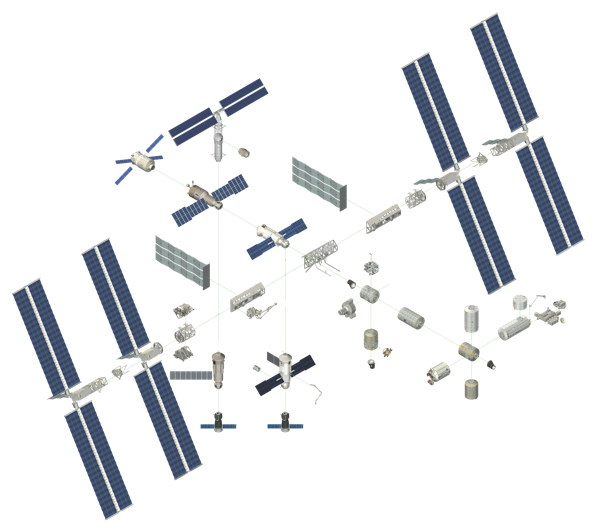

<header class="header">
  <p class="header--item monospace" id="time"><span id="sign">-</span><span id="days">00</span>/<span id="hours">00</span>:<span id="minutes">09</span>:<span id="seconds">00</span> MET <span id="holding">(H)</span></p>
  <h1 class="header--item"><a href="https://github.com/jwronline/dashboard/releases/">Mission Control Center</a></h1>
  <p id="counter" class="header--item">Setup</p>
</header>

<div class="container container__large">

  <section class="container container__world">
    <h2 class="structural">world map</h2>
    <div id="map"></div>
  </section>

  <section class="container container__data" >
    <h2 class="structural">fancy data</h2>
    <div id="data" class="monospace">
      <p>$ User JWR logged in</p>
    </div>
  </section>

</div>


<div class="container container__streams">

  <section class="container--inner container__shuttle">
    <h2 class="structural">shuttle stream</h2>
    <div id="video" class="video">
      <div class="video--intro">
        <p>JWR Mission Control</p>
      </div>
    </div>
  </section>

  <section class="container--inner container__iss">
    <h2 class="structural">iss stream</h2>
    
  </section>
</div>
